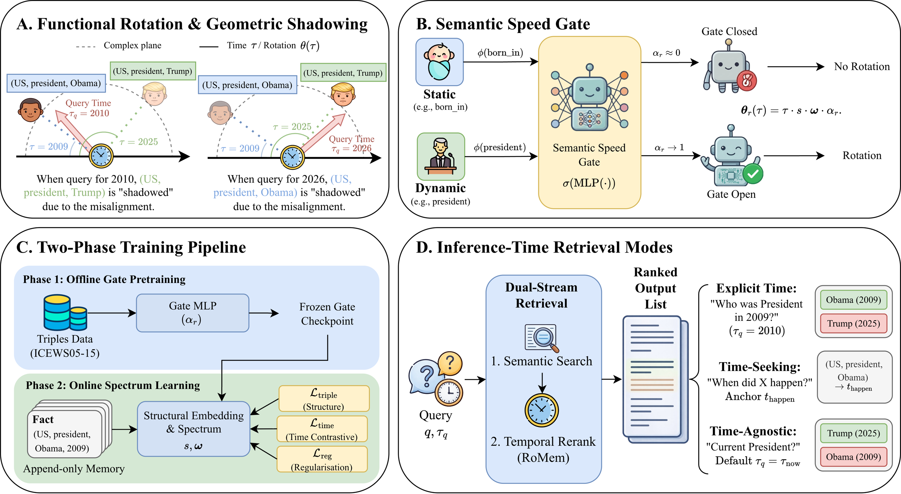
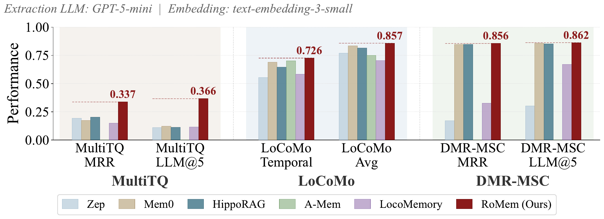
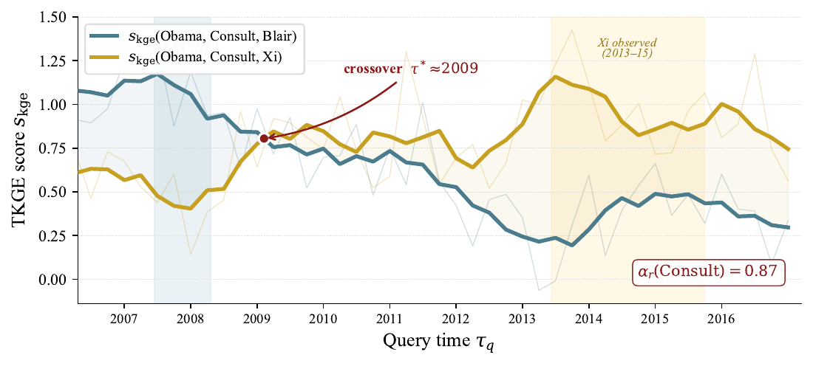

αborn_in ≈ 0
Persistent relations
stay in phase.
(Obama, born_in, Hawaii)
stable across query time
Temporal knowledge graphs × agentic memory
Continuous Phase Rotation for Temporal Knowledge Graphs and Agentic Memory
University of Edinburgh · LIGHTSPEED · University of St Andrews
Illustration of phase alignment; scores are schematic.
The static–dynamic dilemma
Most graph memories treat time as a timestamp attached to a fact. The timestamp says when something was stored, but not whether the relation should remain stable or evolve.
Recency sorting can bury permanent knowledge. Overwriting destroys history. Per-ingestion LLM arbitration adds a costly decision to every update.
αborn_in ≈ 0
αpresident_of → 1
The method
A timestamp is evaluated through a continuous phase function rather than a learned lookup, including at unseen times.
A pretrained MLP maps relation text embeddings to rotation speeds, transferring volatility signals to unseen relations.
At query time, obsolete facts rotate out of alignment and rank below temporally valid facts—without deleting history.

Results
RoMem improves temporal knowledge graph completion and temporal agentic memory while preserving retrieval on largely non-temporal memory.
Agentic-memory numbers below use GPT-5-mini with text-embedding-3-small.
MRR · RoMem-ChronoR
MRR · RoMem
Average Recall@10
MRR · RoMem
MRR · frozen gate


Use RoMem
Use the high-level memory wrapper or add the temporal reranker to an existing graph retrieval pipeline.
Read the quick startfrom romem import RoMemLLM
memory = RoMemLLM(
llm="gpt-4o-mini",
embedding="text-embedding-3-small",
save_dir="./my_memory",
)
memory.add("Obama was president from 2009 to 2017.",
timestamp="2017-01-20")
memory.add("Trump became president in January 2025.",
timestamp="2025-01-20")
memory.ask("Who was president in 2010?")
# → ObamaPaper
Structured memory representations such as knowledge graphs are central to autonomous agents and other long-lived systems. However, most approaches model time as discrete metadata: recency sorting can bury old-yet-permanent knowledge, overwriting loses history, and LLM arbitration adds an expensive call at every ingestion step.
RoMem instead maps relation semantics to a volatility score and combines it with continuous phase rotation. This produces geometric shadowing: obsolete facts rotate out of alignment, so temporally correct facts outrank contradictions without deletion. RoMem reaches 72.6 MRR on ICEWS05-15, improves temporal agentic memory, preserves static memory, and transfers its frozen gate to an unseen financial domain.
Reference
If RoMem helps your research, please cite the paper.
@misc{li2026timelabelcontinuousphase,
title = {Time is Not a Label: Continuous Phase Rotation
for Temporal Knowledge Graphs and Agentic Memory},
author = {Weixian Waylon Li and Jiaxin Zhang and
Xianan Jim Yang and Tiejun Ma and Yiwen Guo},
year = {2026},
eprint = {2604.11544},
archivePrefix= {arXiv},
primaryClass = {cs.CL},
url = {https://arxiv.org/abs/2604.11544}
}